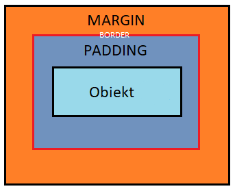
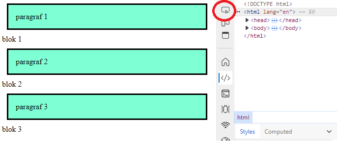
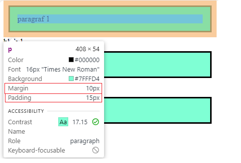

Szablonowy widok obiektów z paddingiem, borderem oraz marginem jest poniżej:
Margin - jest to odległość, która jest poza granicami obiektu i ustala w jakiej odległości może się znaleźć inny obiekt od pierwotnego. Marginesy mogą na siebie nachodzić ale nie mogą wejść na pole obiektu/paddingu.
Border - jest to drugi w kolejności od zewnątrz obszar, który wyznacza granicę miedzy zawartością, a marginesem. Od końca tego obszru wyznacza się początek marginesu.
Padding - jest to odległość między obiektem, a granicą.
ANALOGIA:
W analogii wyobraźmy sobie pudełko do którego wkładamy jakąś rzecz, np. laptop. W tym przypdaku laptop byłby obiektem. Odległość laptopa od wewnętrznych ścianek pudełka to padding. Ścianki pudełka to byłby border. Odległość pudełka od innego pudełka w magazynie to byłby margin.
Właściwości CSS jakiegoś obiektu na stronie internetowej można sprawdzić w chodząc w inspect mode, następnie klikająć w przycisk zaznaczony czerwonym okręgiem.

Następnie po najechaniu na jakiś obiekt pojawi się okienko. Przykłądowe okienko pokazane poniżej. W tym okienku zaznaczone są wartości margin i padding.
